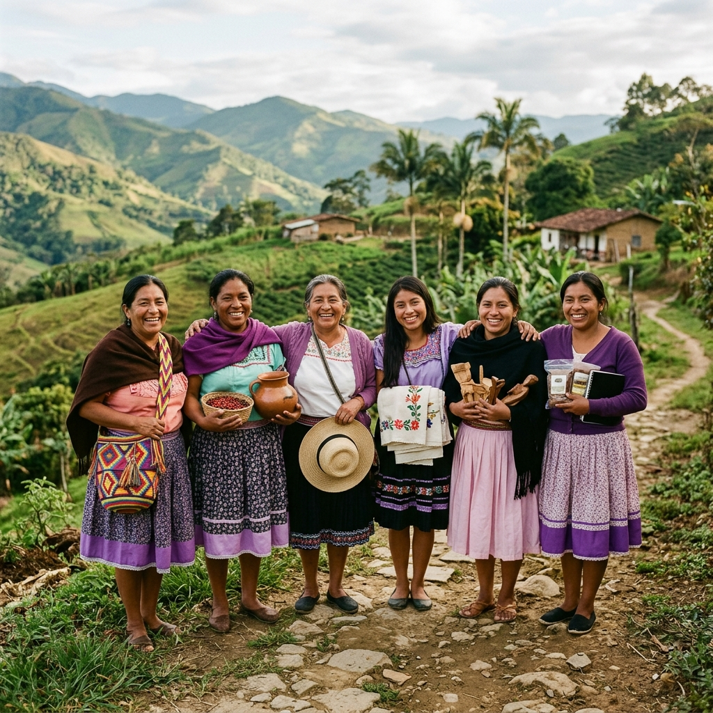
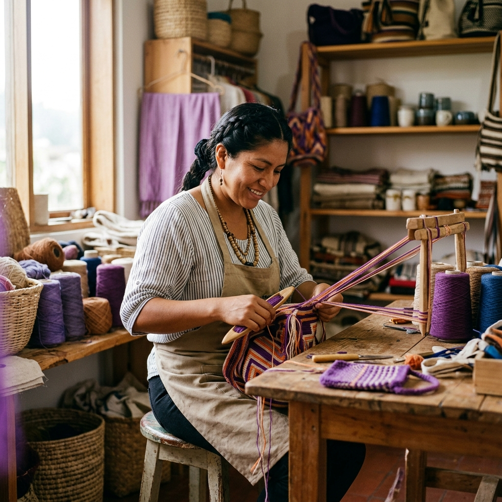
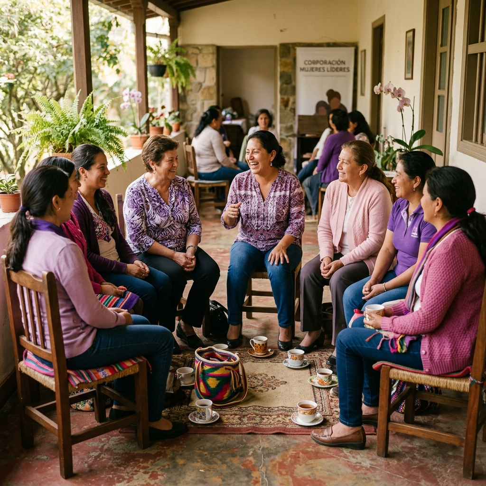

Cuidar también es construir futuro
Fortalecimiento productivo para mujeres cuidadoras de personas con discapacidad y adultos mayores en Norte de Santander.

Una labor que sostiene familias y comunidades
La figura de la mujer cuidadora ha sido históricamente invisibilizada y subvalorada, pese a que cumple una función central en el sostenimiento de las familias y comunidades. Muchas mujeres sacrifican oportunidades laborales, educativas y sociales para dedicarse al cuidado de familiares que requieren atención permanente.
En zonas rurales de Norte de Santander, esta realidad se acentúa por la falta de acceso a servicios, oportunidades de empleo y redes de apoyo institucional.
Este programa reconoce el valor social y económico del cuidado, fortaleciendo emprendimientos e ideas productivas lideradas por mujeres cuidadoras.

Objetivo general
Fortalecer las capacidades productivas y económicas de mujeres cuidadoras de población en condición de discapacidad y adultos mayores en los municipios de Chinácota, Ragonvalia, Salazar, Ábrego y Ocaña, mediante el desarrollo de iniciativas productivas sostenibles que contribuyan a su autonomía económica y al mejoramiento de su calidad de vida.
Objetivos específicos
Realizar promoción y socialización del proyecto en los municipios seleccionados, con el propósito de brindar información y oportunidad de participación a las mujeres cuidadoras que cumplan con los requisitos y criterios de postulación.
Fortalecer las capacidades de las mujeres cuidadoras de población en condición de discapacidad y adultos mayores beneficiarias del proyecto, desarrollando competencias y herramientas técnicas para que sus emprendimientos sean sostenibles en el mercado.
Entregar incentivos productivos a las beneficiarias de acuerdo con los planes de negocio e inversión realizados, con el propósito de mejorar la producción y comercialización de sus emprendimientos.
Realizar procesos de seguimiento para verificar el buen uso del incentivo entregado, así como acompañamiento, monitoreo, mentoría y asesoría personalizada al emprendimiento.
Ejecutar las acciones logísticas, administrativas y operativas del proyecto para que se desarrolle de acuerdo con las proyecciones realizadas.
Población beneficiaria
Mujeres cuidadoras de población en condición de discapacidad y adultos mayores en los municipios de Chinácota, Ragonvalia, Salazar, Ábrego y Ocaña del departamento Norte de Santander.
Beneficios e incentivos
Formación, acompañamiento e incentivos para impulsar la autonomía económica.
Incentivos productivos
Emprendimientos en funcionamiento
Incentivo de hasta $7.000.000 para emprendimientos que ya estén operando.
Ideas de negocio
Incentivo de hasta $4.000.000 para ideas de negocio en etapa inicial.
Requisitos de postulación
Perfil de la mujer cuidadora
Ser mujer cuidadora de población en condición de discapacidad o adulto mayor.
Tener entre 18 y 65 años.
Tener Sisbén menor o igual a C18.
Residir en los municipios seleccionados y priorizados.
Documentos personales y del cuidado
Presentar registro del certificado de la persona en condición de discapacidad o del adulto mayor.
Presentar documento de identidad.
Presentar historia clínica.
Presentar copia del Sisbén.
Presentar certificado del presidente de junta de acción comunal del barrio o vereda donde reside.
Emprendimiento e inmueble
Acreditar la titularidad o uso del inmueble donde realiza el emprendimiento. Para esto puede presentar:
- Certificado de libertad y tradición
- Carta de compraventa
- Documento equivalente
- Contrato de arrendamiento
- Documento equivalente
Presentar certificado donde indique que el inmueble donde realiza el emprendimiento no se encuentra en alto riesgo según el EOT, PBOT o POT. Este certificado debe ser expedido por la Secretaría de Planeación de cada municipio o dependencia encargada.
Presentar certificado de que el inmueble donde realiza el emprendimiento cuenta con servicios públicos. Este certificado debe ser expedido por la empresa encargada en cada municipio o por la administración municipal.
Presentar certificado con firma autenticada por la mujer cuidadora emprendedora donde indique que el emprendimiento que está desarrollando es sostenible.
Declaraciones y compromisos
Presentar declaración juramentada que indique el vínculo con la persona en condición de discapacidad o adulto mayor.
Tener disposición para realizar todas las actividades del proyecto.
Presentar carta de aceptación para participar en todos los procesos.
No haber sido beneficiaria de proyectos similares en los últimos 4 a 5 años en el departamento.
Presentar declaración juramentada sobre no haber sido beneficiaria de proyectos similares.
Criterios de priorización
Luego del registro de las asistentes en la ficha técnica de datos o instrumento de caracterización, se aplicarán criterios de priorización para la identificación de las beneficiarias.
| Criterio | Condición | Puntaje |
|---|---|---|
| Cabeza de hogar | Mujer cuidadora cabeza de hogar | 20 |
| Cabeza de hogar | Mujer cuidadora no cabeza de hogar | 10 |
| Nivel Sisbén | Mujer cuidadora Sisbén A | 20 |
| Nivel Sisbén | Mujer cuidadora Sisbén B | 15 |
| Nivel Sisbén | Mujer cuidadora Sisbén C | 10 |
| Emprendimiento | Mujer cuidadora con emprendimiento funcionando | 20 |
| Emprendimiento | Mujer cuidadora con idea de negocio | 10 |
| Sector | Mujer cuidadora sector rural | 20 |
| Sector | Mujer cuidadora sector urbano | 15 |
| Personas al cuidado | Mujer cuidadora con dos o más personas al cuidado | 20 |
| Personas al cuidado | Mujer cuidadora con una persona al cuidado | 10 |
Etapas del proyecto
Promoción y socialización
Difusión del proyecto en los municipios priorizados para informar a las mujeres cuidadoras sobre la oportunidad de participación.
Fortalecimiento de capacidades y desarrollo de competencias
Formación y desarrollo de herramientas técnicas para que los emprendimientos de las beneficiarias sean sostenibles en el mercado.
Entrega de incentivos productivos
Entrega de incentivos de acuerdo con los planes de negocio e inversión realizados para mejorar la producción y comercialización.
Seguimiento, monitoreo, mentoría y asesoría personalizada
Verificación del buen uso del incentivo, acompañamiento continuo y asesoría personalizada a cada emprendimiento.
Logística, administración, cierre e informe final
Ejecución de acciones logísticas, administrativas y operativas, actividades de cierre e informe final del proyecto.
Fechas oficiales
Las fechas oficiales de socialización, inscripción y demás actividades serán publicadas cuando sean definidas por el equipo del proyecto.
Historias de transformación
Mujeres que cuidan, emprenden y construyen autonomía

Esta sección será alimentada en una fase posterior con perfiles, relatos y emprendimientos de las mujeres beneficiarias del proyecto.
Bitácora del proyecto
Avances, jornadas y momentos clave del proceso
Esta sección será alimentada en una fase posterior con avances, actividades, jornadas de socialización, encuentros formativos y momentos relevantes del proyecto.